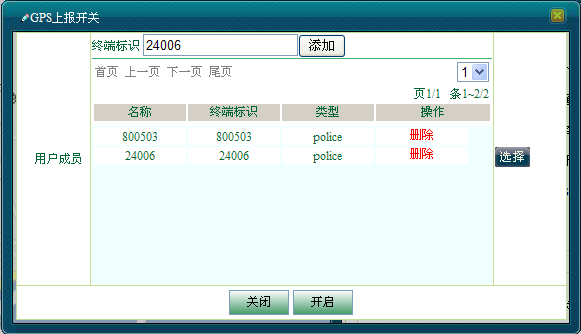
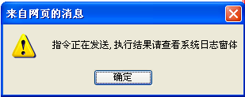
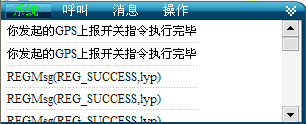
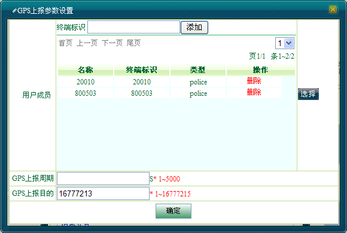
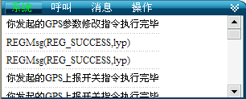
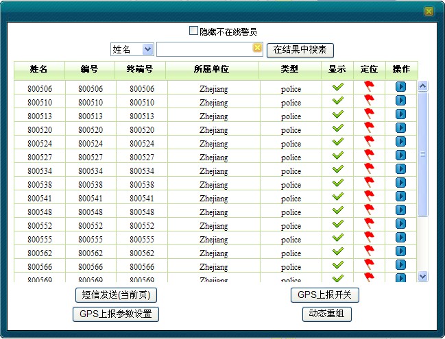
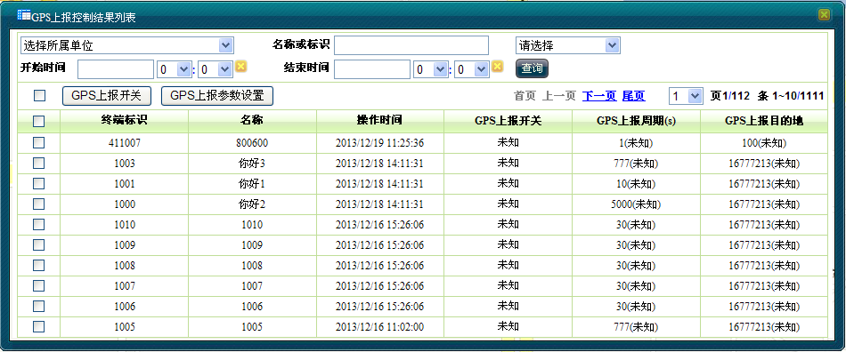
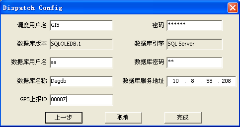

只有调度用户具有终端GPS控制业务的权限。在进行终端GPS控制业务操作之前，首先要确认调度用户成功登陆GIS系统。
本GIS调度系统主要通过IP网络与WEB服务器端相连，获取终端用户GPS位置信息，并在地图上进行实时位置显示。因此默认情况下，每个终端用户都会周期性的给GPS解折服务器实时上报GPS位置信息。为了减轻GPS解折服务器的运行负荷，提高工作效率。系统提供了设置GPS信息上报开关的功能，调度用户可以根据具体需求设置指定终端用户的GPS信息上报开关。并且可对GPS上报的参数进行设置以及列表显示终端用户GPS开关的控制结果。
在本节中主要介绍：
给选中的移动终端设置GPS上报开关步骤如下：
1）在系统操作菜单栏中单击［调度功能/呼叫面板］，弹出“呼叫面板”对话框。
2）单击“呼叫业务”模块中的“GPS上报开关”，弹出“GPS上报开关”对话框。
3）在对话框里输入无线终端标识号，点击边上＜添加＞按扭，或者点击用户成员右边＜选择＞按扭，在列表上直接选择成员。系统自动获取终端标识对应的名称、终端标识和类型，列表显示。如图1.1所示。

图1.1 GPS上报开关对话框
4）在列表上可以单击＜删除＞按钮，删除选中的用户，然后单击＜关闭＞按钮表示设置该终端不上报GPS位置信息，单击＜开启＞按钮表示设置该终端上报GPS位置信息 ，设置完成后，会跳出确认对话框，如图1.2所示：

图1.2指令发送提示框
5）单击＜确定 ＞按钮，日志面板上会有指令执行结果的提示，如图1.3所示。

图1.3日志中的指令执行结果
给选中的移动终端开启了GPS上报开关后，还可对GPS上报的时间间隔和上报目的地两个参数进行设置。步骤如下：
1）在系统操作菜单栏中单击［调度功能/呼叫面板］，弹出“呼叫面板”对话框。
2）单击“呼叫业务”模块中的“GPS上报参数设置”，弹出“GPS上报参数设置”对话框。
3）在对话框里输入无线终端标识号，点击边上＜添加＞按扭，或者点击用户成员右边＜选择＞按扭，在列表上直接选择成员。系统自动获取终端标识对应的名称、终端标识类型，列表显示。如图2.1所示。

图2.1 GPS上报参数设置
4）在列表上可以单击＜删除＞按钮，删除选中的用户，然后输入"GPS上报周期”和“GPS上报的目的GPS解析服务器的ID” ，对用户进行GPS上报参数的设置。 单击＜确定＞按扭后，会跳出确认对话框：如图2.2所示。
图2.2指令发送提示框
5）单击＜确定 ＞按钮，日志面板上会有指令执行结果的提示，如图2.3所示。

图2.3日志中的指令执行结果
 说明：
说明：
除了通过在呼叫面板上点击按扭进行GPS上报开关和GPS上报参数设置外，还可通过框选用户进行设置。
1）在地图操作工具栏中单击“”框选图标。
2）在地图上框选移动用户，该区域内被选中的所有用户（包括显示和隐藏的）都将呈现在用户列表中，如图3.1所示。

图3.1 框选用户列表
3）在上图中根据需要单击＜GPS上报开关 ＞或者＜GPS上报参数设置 ＞按钮，对列表中的用户进行设置。接下去操作步骤同GPS上报开关和GPS上报参数设置。
打开GPS上报控制结果列表初始情况下显示了系统所有终端的GPS开关和GPS参数设置情况，调度用户可以根据实际需要过滤显示终端用户GPS信息上报情况。浏览列表步骤如下：
1）在系统操作菜单栏中单击［调度功能/GPS上报控制结果列表］，弹出“GPS上报控制结果列表”对话框。如图4.1所示。列表里“GPS上报开关”有开启，关闭，未知三种情况， 未知是指终端没有开机，系统联系不上。

图4.1 GPS上报控制结果列表
2）系统默认分页列表显示所有的终端用户的GPS上报开关和上报参数的设置情况。用户可在对话框最上面的选项进行过滤显示用户。过滤条件有所属单位、名称或标识以及选择开始、结束时间，或者根据GPS上报开关，GPS上报周期以及GPS上报目的地进行过滤。
3）在“GPS上报控制结果列表”对话框里还有GPS上报开关和GPS上报参数设置的按扭，点击还可以进行这两项参数的设置。
说明：

图5.1 Sepura手台-修改调度用户
Copyright © 2012 Eastcom, Inc. All rights reserved. |
||